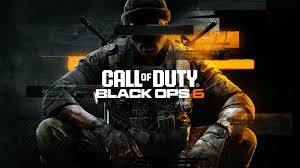
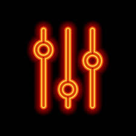

Ce site est conçu pour aider les nouveaux joueurs de Call of Duty à améliorer leurs performances, sans avoir recours à des techniques de triche ou de "camping". L'objectif ici est de vous fournir des conseils pratiques et des ajustements de réglages qui vous permettront de progresser naturellement dans le jeu.
Nous nous concentrons sur des recommandations honnêtes : des configurations de jeu adaptées à votre style, des conseils pour optimiser vos classes d'armes, et tout cela sans utiliser de "glitchs" ou de stratégies Meta. Le but est de vous apprendre à maîtriser les armes, à développer vos compétences, et à devenir un joueur constant qui s'améliore avec le temps.
En suivant ces conseils, vous serez non seulement plus efficace en jeu, mais vous aurez aussi l'opportunité de prendre plaisir à chaque partie, tout en progressant de manière saine et équitable.

Réglages Personnalisés
Optimisez votre expérience de jeu en ajustant les paramètres à votre convenance. Chaque joueur a des besoins uniques, que ce soit pour la réactivité des commandes ou pour les réglages visuels afin de mieux voir les ennemis dans chaque situation.
Dans cette section, nous vous guiderons à travers les réglages les plus importants, du contrôle de la sensibilité de la souris aux ajustements graphiques qui amélioreront votre visibilité et votre confort de jeu. Peu importe votre style de jeu, ces conseils vous aideront à obtenir des performances optimales et une expérience fluide.

Les Meilleures Armes
Dans cette section, nous vous aiderons à découvrir les armes les plus adaptées à chaque situation sur le terrain. Que vous soyez un expert du combat rapproché ou un tireur d'élite, il est essentiel de connaître les équipements qui vous donneront un avantage stratégique.
Nous vous guiderons à travers les meilleures configurations d'armes, en vous montrant comment adapter votre arsenal à vos préférences de jeu et à chaque situation spécifique. Améliorez votre réactivité, votre précision et votre efficacité en choisissant judicieusement vos armes et accessoires.
Découvrez l'Esport de Call of Duty
Un Monde Compétitif en Pleine Croissance
L'esport de Call of Duty offre une expérience compétitive unique, rassemblant des joueurs et des équipes du monde entier. Les tournois majeurs et les ligues, comme la célèbre Call of Duty League (CDL), sont au cœur de cette scène compétitive en constante évolution.
Que vous soyez un simple spectateur ou un joueur cherchant à se lancer dans la compétition, l'esport est un univers passionnant où stratégie, travail d'équipe et maîtrise de jeu se rencontrent.
Ce Que Vous Trouverez Ici
Sur ce site, nous aborderons les bases de l'esport de Call of Duty : des conseils pour vous impliquer dans la scène compétitive aux explications des modes de jeu utilisés dans les tournois. Vous y trouverez également des astuces pour développer vos compétences et peut-être franchir un jour le pas vers la compétition.
Suivez-nous pour en apprendre davantage sur cet univers palpitant, et découvrez comment l'esport peut enrichir votre expérience de Call of Duty.